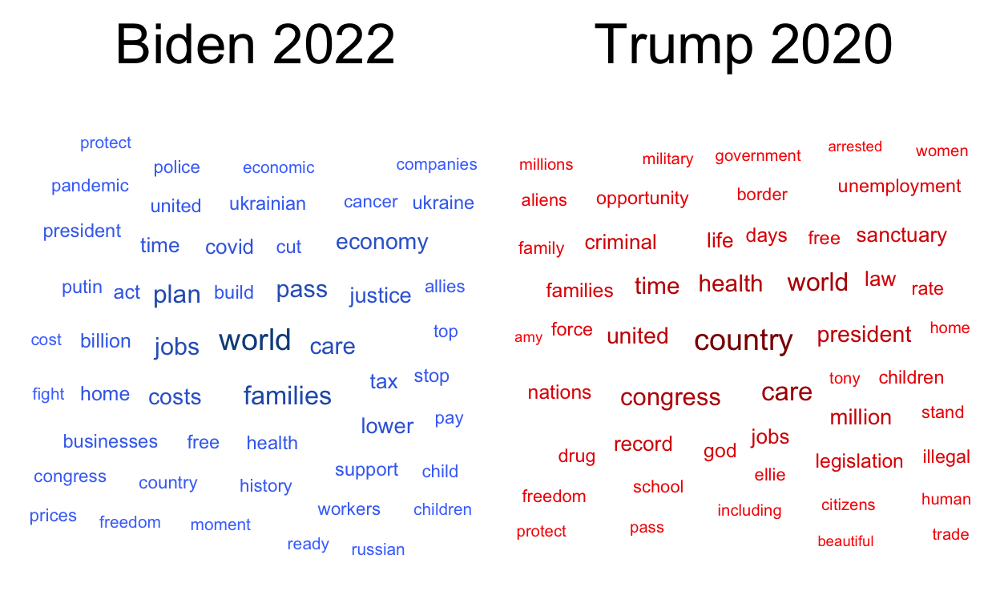
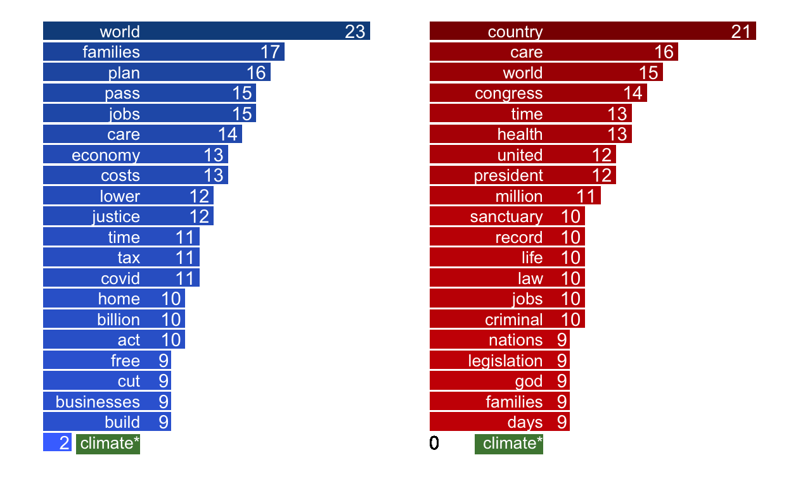
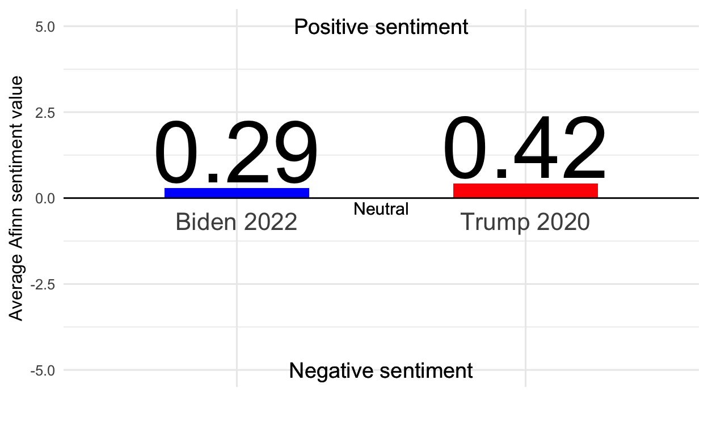

Overview
The following report analyzes the transcripts of two State of the Union Addresses: Biden’s 2022 address and Trump’s 2020 address. First, data is wrangled to display the most frequently mentioned words by each president. Then, Afinn analysis is performed to compare the sentiment of the two speeches.
code
knitr::opts_chunk$set(echo = TRUE, message = FALSE, warning = FALSE )
# attach packages
library(tidyverse)
library(tidytext)
library(textdata)
library(pdftools)
library(ggwordcloud)
library(here)
library(patchwork)
library(DT)
library(strip)
library(stringr)
# reading in the data
biden <- pdf_text(here("data", "biden.pdf")) # Biden State of the Union 2022
trump <- pdf_text(here("data", "trump.pdf")) # Trump State of of the Union 2020
Text Analysis

code
### DATA WRANGLING
# storing data frames of text for each speech transcript
biden_lines <- data.frame(biden) %>%
mutate(page = 1:n()) %>% # adding a column with page numbers
mutate(text_full = str_split(biden, pattern = '\\n')) %>% # splitting the text by line breaks
unnest(text_full) %>% # unnesting the text column
mutate(text_full = str_trim(text_full)) # trimming the whitespace
trump_lines <- data.frame(trump) %>%
mutate(page = 1:n()) %>% # adding a column with page numbers
mutate(text_full = str_split(trump, pattern = '\\n')) %>% # splitting the text by line breaks
unnest(text_full) %>% # unnesting the text column
mutate(text_full = str_trim(text_full)) # trimming the whitespace
# creating dataframes with a column where each word is a single observation
biden_words <- biden_lines %>% # dataframe with a whole bunch of words as single observations
unnest_tokens(word, text_full) %>% # tokenizing by word
select(-biden)
trump_words <- trump_lines %>% # dataframe with a whole bunch of words as single observations
unnest_tokens(word, text_full) %>% # tokenizing by word
select(-trump) %>%
filter(word != "applause")
# removing stop words
# storing a vector of custom stop words to remove from the text
stop_custom_vector <- c("applause", "administration", "american", "americans", "america", "americas", "ive", "im", "havent", "dont", "cant", "wont", "lets", "its", "people", "tonight", "percent", "us", "ago", "nation", "nation's", "weve", 1:10000)
# turning the vector into a dataframe
stop_custom <- data.frame(stop_custom_vector, "word")
stop_custom_clean <- stop_custom %>%
rename("word" = stop_custom_vector)
# removing stop words from both text dataframes
biden_words_clean <- biden_words %>%
mutate(word = str_remove_all(word, pattern = "[:punct:]")) %>% # removing apostrophes and other punctuation
anti_join(stop_words, by = "word") %>%
anti_join(stop_custom_clean, by = "word")
trump_words_clean <- trump_words %>%
mutate(word = str_remove_all(word, pattern = "[:punct:]")) %>%
anti_join(stop_words, by = "word") %>%
anti_join(stop_custom_clean, by = "word")
# getting counts of the instances of each word from each speech text
nonstop_counts_biden <- biden_words_clean %>% # getting the counts of each word
count(word)
nonstop_counts_trump <- trump_words_clean %>% # getting the counts of each word
count(word)
# storing dataframes of the top 50 most counted words for each speech
top_50_words_biden <- nonstop_counts_biden %>%
arrange(-n) %>% # descending order
slice(1:50) %>% # top 100
ungroup() # removing stored groupings
top_50_words_trump <- nonstop_counts_trump %>%
arrange(-n) %>% # descending order
slice(1:50) %>% # top 100
ungroup() # removing stored groupings
### VISUALIZATION
# generating word clouds for each speech based on most frequent words
speech_cloud_biden <- ggplot(data = top_50_words_biden, aes(label = word)) + # labeling the words with their values
geom_text_wordcloud(aes(color = n, size = n), shape = "square") + # mapping aesthetics by number of counts
scale_size_area(max_size = 5) + # limiting the size of the biggest words
scale_color_gradientn(colors = c("royalblue1", "dodgerblue4")) + # custom colors
theme_minimal() +
labs(title = "Biden 2022") +
theme(plot.title = element_text(hjust = 0.5,
size = 26))
speech_cloud_trump <- ggplot(data = top_50_words_trump, aes(label = word)) +
geom_text_wordcloud(aes(color = n, size = n), shape = "square") +
scale_size_area(max_size = 5) +
scale_color_gradientn(colors = c("red","red4")) +
theme_minimal() +
labs(title = "Trump 2020",
size = 12) +
theme(plot.title = element_text(hjust = 0.5,
size = 26))
speech_cloud_biden | speech_cloud_trump

code
### DATA WRANGLING
climate_biden <- nonstop_counts_biden %>%
filter(word == "climate") %>%
mutate(word = case_when(
word == "climate" ~ "climate*"
))
climate_trump_df <- data.frame("climate*", 0)
climate_trump <- climate_trump_df %>%
rename(word = X.climate..,
n = X0)
top_20_words_biden <- nonstop_counts_biden %>%
arrange(-n) %>% # descending order
slice(1:20) %>% # top 20
ungroup()
top_20_climate_biden <- rbind(top_20_words_biden, climate_biden)
top_20_words_trump <- nonstop_counts_trump %>%
arrange(-n) %>% # descending order
slice(1:20) %>% # top 20
ungroup()
top_20_climate_trump <- rbind(top_20_words_trump, climate_trump)
### VISUALIZATION
# bar plots of 20 most frequently used words by speach
biden_bar <- ggplot(data = top_20_climate_biden, aes(x = reorder(word, n), y = n, fill = n)) + # make the plot in descending order
geom_col() +
coord_flip() + # flipping axes
scale_fill_gradientn(colors = c("royalblue1", "dodgerblue4")) + # manual colors
theme_minimal() +
theme(legend.position = "none", # adjusting text and legends
axis.text.x = element_blank(),
axis.text.y = element_text(
margin = margin(t = 0, r = -70, b = 0, l = 0),
size = 10,
color = "white"),
panel.grid = element_blank(), # removing gridlines
) +
geom_text(aes(label = n), hjust = 1.2, color = "white") + # adding number labels
labs(y = element_blank(),
x = element_blank()) +
geom_rect(ymin = 2.3, ymax = 6.8, xmin = 0, xmax = 1.4,
fill = "darkgreen",
alpha = 0.07) # allowing "climate" to be seen
trump_bar <- ggplot(data = top_20_climate_trump, aes(x = reorder(word, n), y = n, fill = n)) +
geom_col() +
coord_flip() +
scale_fill_gradientn(colors = c("red","red4")) +
theme_minimal() +
theme(legend.position = "none",
axis.text.x = element_blank(),
axis.text.y = element_text(
margin = margin(t = 0, r = -80, b = 0, l = 0),
size = 10,
color = "white"),
panel.grid = element_blank()
) +
geom_text(aes(label = n), hjust = 1.2, color = "white") +
labs(y = element_blank(),
x = element_blank()) +
geom_text(label = "0", x = 1, y = 0.3) +
geom_rect(ymin = 2.9, ymax = 7.3, xmin = 0, xmax = 1.4,
fill = "darkgreen",
alpha = 0.07)
biden_bar | trump_bar # placing plots next to eachother in outout html

Fig. 1 displays the results of text analysis from the 2022 and 2020 State of the Union address transcripts. Biden’s 2022 adress is on the left side of the panel while Trump’s 2020 address is on the right. The top panel visualizes the top 50 most used words in each speech with the size of word corresponding to frequency. The bottom panel examines counts of the top 20 most frequently used words in each address. Words that were determined to be of no interest to the comparison (stop words) were excluded from the analysis and visualization.
*Note: “climate” was not one of the top 20 most frequently used words in either speech, but is included here for comparison.
Sentiment Analysis

code
### DATA WRANGLING
# adding a column with afinn sentiment analysis to each data frame
biden_afinn <- biden_words_clean %>%
inner_join(get_sentiments("afinn"), by = 'word') # this will remove any words that don't have sentiment values
trump_afinn <- trump_words_clean %>%
inner_join(get_sentiments("afinn"), by = 'word')
# values are sorted from -5 to 5
# Find the mean afinn score of each speech
# Biden
afinn_counts_biden <- biden_afinn %>%
count(value)
afinn_mean_biden <- round(mean(biden_afinn$value), 2)
# Trump
afinn_counts_trump <- trump_afinn %>%
count(value)
afinn_mean_trump <- round(mean(trump_afinn$value), 2)
# making a mini dataframe with the means for each speech
trump_biden_afinn <- data.frame(afinn_mean_trump, afinn_mean_biden) %>%
pivot_longer(cols = 1:2, values_to = "afinn", names_to = "pres") %>%
mutate(pres = case_when(
pres == "afinn_mean_biden" ~ "Biden 2022",
pres == "afinn_mean_trump" ~ "Trump 2020"
))
### VISUALIZATION
ggplot(data = trump_biden_afinn, aes(x = pres, y = afinn, fill = pres)) +
geom_col(width = 0.5) +
geom_text(aes(label = afinn), # adding text labels to columns
size = 20,
vjust = -.1) +
scale_fill_manual(values = c("blue", "red")) + # custom colors
scale_y_continuous(limits = c(-5,5)) + # changing y axis to reflect
theme_minimal(12) +
theme(axis.text.x = element_text( # customizing text
size = 16,
vjust = 37),
legend.position = "none") + # removing legend
labs(x = element_blank(), y = "Average Afinn sentiment value") + # labeling axes
geom_text(aes(x = 1.5, y =5), # adding text
label = "Positive sentiment",
size = 5) +
geom_text(aes(x = 1.5, y =-5),
label = "Negative sentiment",
size = 5)+
geom_text(aes(x = 1.5, y =-.3),
label = "Neutral",
size = 4) +
geom_hline(yintercept = 0) # adding horizontal line to mark neutral sentiment

Fig. 2 shows the results of Afinn text sentiment analysis performed on the transcripts of the two State of the Union Addresses. Qualifying words are given a score from -5 (very negative) to 5 (very positive). The figure displays the average Afinn score of all qualifying words in each transcript. While the results showed similar sentiment overall, Trump’s 2020 address rated as slightly more positive than Biden’s 2022 address. \[\\[.5in]\]
Searchable Tables
Use the following tables to search for frequencies of specific words of interest in each address. For these tables, all words (including stop words) have been retained.
Biden 2022
Trump 2020
Citations
Address transcripts were taken from the following sources:
“Full Transcript: Trump’s 2020 State of the Union Address,” February 5, 2020, sec. U.S. https://www.nytimes.com/2020/02/05/us/politics/state-of-union-transcript.html.
“Full Text: Biden State of the Union 2022 Transcript.” POLITICO. Accessed March 3, 2022. https://www.politico.com/news/2022/03/01/biden-state-of-the-union-2022-transcript-full-text-00013009.